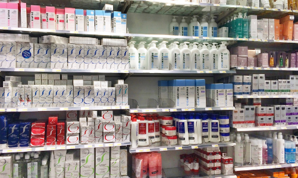

5 dược mỹ phẩm Pháp được đánh giá tốt tại Việt Nam
Nổi tiếng với sự đơn giản và tiện dụng, rất nhiều người mê đồ "made in France" (đến từ Pháp). Và trong số những sản phẩm được yêu thích nhất chính là các mặt hàng được mua từ hiệu thuốc...